CJP Protest on Education Minister
The 36-Day Movement That Forced a Union Minister's Resignation
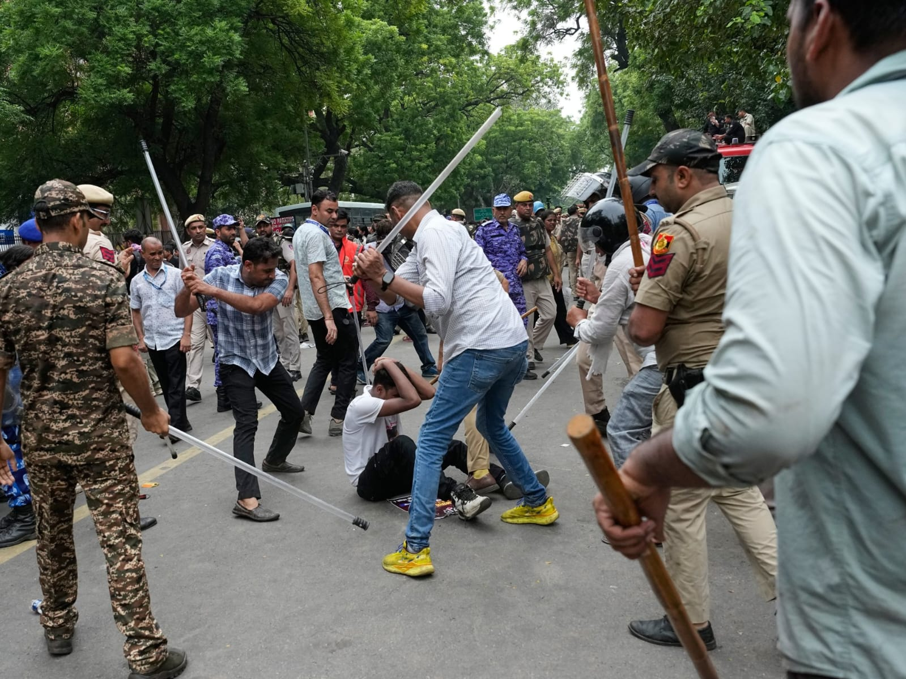
CJP Protest on Education Minister — Jantar Mantar, New Delhi.
New Delhi: What began on June 6, 2026 as a small sit-in at Jantar Mantar soon transformed into one of the biggest youth-led movements India had witnessed in years. Over 36 days, the Cockroach Janta Party (CJP) — a satirical movement born in May 2026 after Chief Justice Surya Kant allegedly compared unemployed youth to "cockroaches" — forced the resignation of Union Education Minister Dharmendra Pradhan.
🔥 The Spark: NEET-UG 2026 Paper Leak
The immediate trigger was the NEET-UG 2026 paper leak. On May 3, 2026, the exam was cancelled following widespread allegations of leaks and irregularities. The fallout was devastating — at least 21 students reportedly died by suicide across India in the weeks that followed. The CJP said 24 students died nationwide, including 6 in Uttar Pradesh alone.
Students and families were left without answers. The CJP stepped in with a simple demand: accountability.
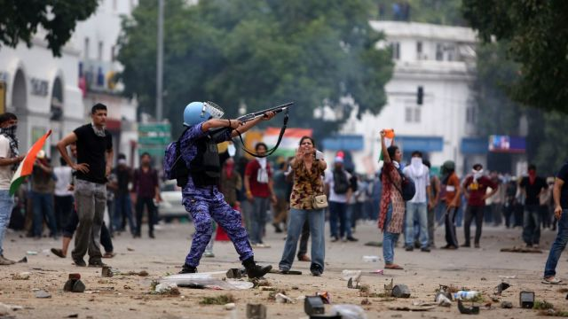
CJP Protest on Education Minister — Students gather at Jantar Mantar.
📅 The 36-Day Timeline

CJP Protest on Education Minister — Police action on protesters.
🎯 The Three Core Demands
The CJP's demands were clear and uncompromising:
1. Resignation of Union Education Minister Dharmendra Pradhan
2. ₹1 crore compensation for each family of students who died by suicide
3. Criminal action against those responsible for the paper leak
All three demands were accepted by the government on July 25, 2026. Legal cases against protesters were also dropped. The Supreme Court later quashed NEET protest FIRs across 5 states.
"Dharmendra Pradhan has resigned and this is the proof that if you don't get scared, you can win. You should not be scared to speak in a democracy. Only if you raise your voice, they will stay in line."
👥 The Leaders
Abhijeet Dipke — Founder and national convener of CJP. A 30-year-old strategist who became the face of the movement. His rallying cry: "We are cockroaches. Once it enters, it does not leave."
Saurav Das — Co-convener. Handled negotiations with the government and was a key spokesperson.
Ashutosh Ranka — Spokesperson and key organiser. One of the leaders named in CJP's claim of potential government arrests before the October 10 protest.
✊ Sonam Wangchuk's Hunger Strike
Environmentalist and education reformer Sonam Wangchuk joined the protest on June 28 and began an indefinite hunger strike. He fasted for 26 days — the longest of his career. On July 18, as his health deteriorated, police moved him to Safdarjung Hospital. He was later shifted to Medanta Hospital in Gurugram.
On July 24, Wangchuk ended his fast in the presence of Union Ministers JP Nadda and Jitendra Singh. He stated he agreed to end the fast "in view of possible violence in the country." CJP praised him: "You awakened the nation's conscience."
🌆 Nationwide Support
The movement wasn't limited to Delhi. Protests erupted across Mumbai, Bengaluru, Kolkata, Chandigarh, Pune, Hyderabad, Ahmedabad, and several other cities. In Bengaluru's Freedom Park alone, over 1,000 people gathered on July 19. In Mumbai, thousands marched in solidarity.
🎬 Celebrity Support
Bollywood and public figures rallied behind the students:
Shabana Azmi and Prakash Raj joined the Chalo Sansad march physically.
Alia Bhatt, Kareena Kapoor, Ananya Panday, Varun Dhawan, Karan Johar, Preity Zinta, Sonakshi Sinha, Diljit Dosanjh, Huma Qureshi, Imran Khan, Arijit Singh, R. Madhavan, Kamal Haasan, Pooja Bhatt, Aditi Rao Hydari, Genelia Deshmukh — all voiced support on social media.
Rahul Gandhi called Pradhan's resignation a "huge step" and demanded an apology from PM Modi.
📊 Key Numbers
🏛️ The Aftermath
Pradhan's resignation was a historic victory — something years of parliamentary opposition could not achieve. The CJP submitted a five-point education reform charter for future exams. Both sides agreed to meet again in four weeks to check progress.
But the movement didn't end. On August 9, CJP leaders supported a hunger strike in Jharkhand. The Supreme Court on October 9, 2026, rejected a plea seeking an independent probe into the July police action. And the CJP returned with "Jantar Mantar 2.0" on October 10, 2026, this time demanding the resignation of Chief Election Commissioner Gyanesh Kumar.
📸 Gallery — Moments from the Movement
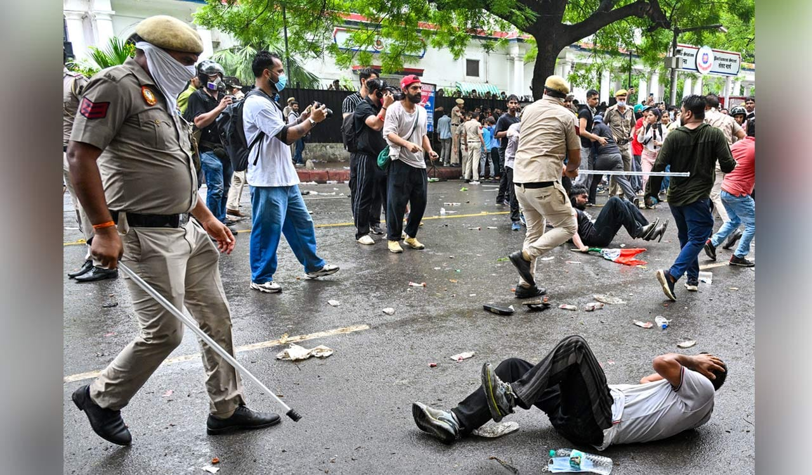
CJP Protest on Education Minister — Celebration after minister's resignation.
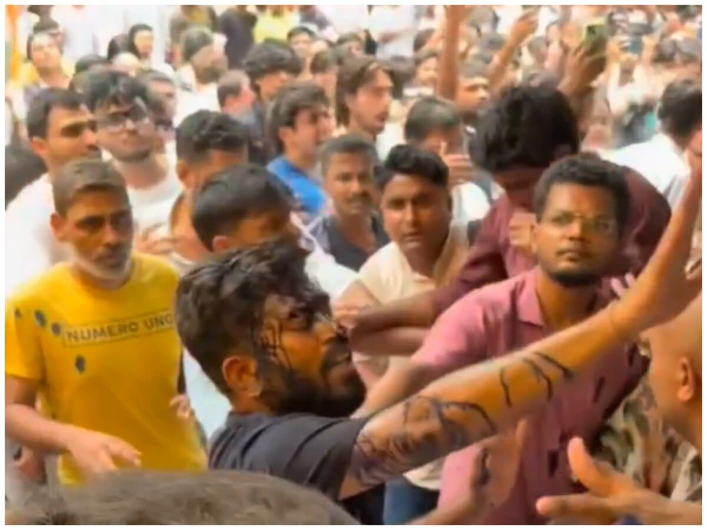
CJP Protest on Education Minister — Solidarity rallies.
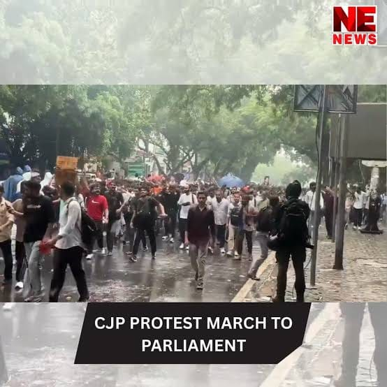
CJP Protest on Education Minister — Student voices.
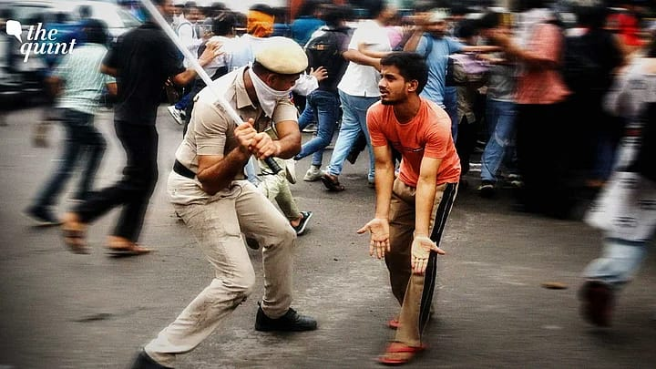
CJP Protest on Education Minister — On the ground.
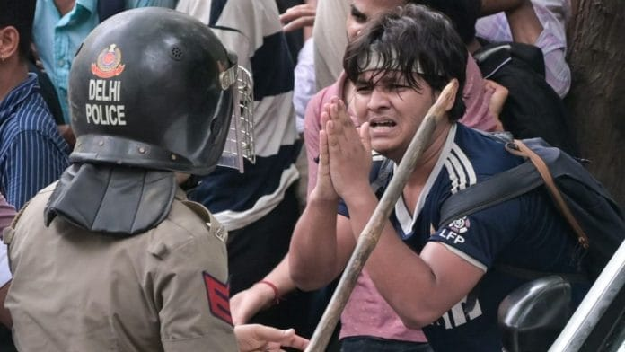
CJP Protest on Education Minister — Growing crowd.
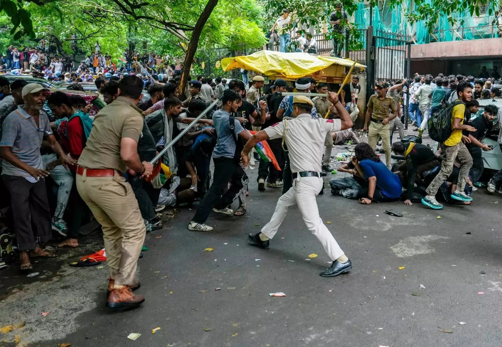
CJP Protest on Education Minister — Night vigil.

CJP Protest on Education Minister — Slogans and banners.
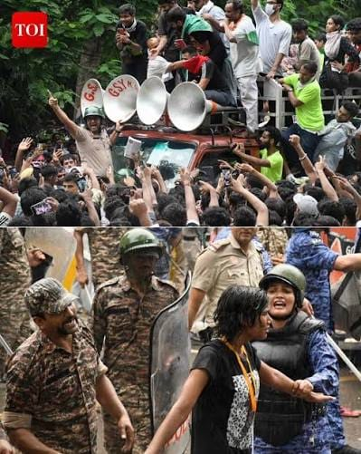
CJP Protest on Education Minister — Crowd at Jantar Mantar.
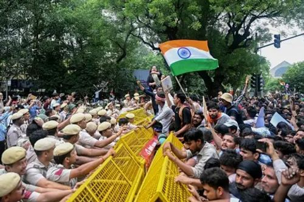
CJP Protest on Education Minister — Voices of the youth.
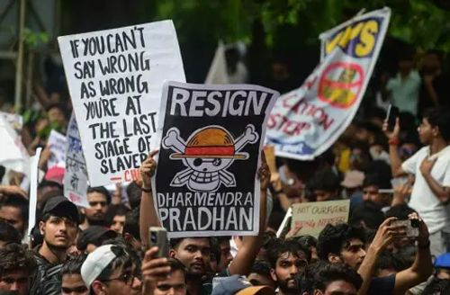
CJP Protest on Education Minister — Streets of Delhi.
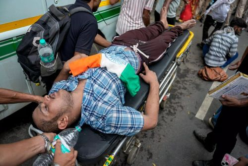
CJP Protest on Education Minister — Rally moments.
CJP Protest on Education Minister — Supporters gather.
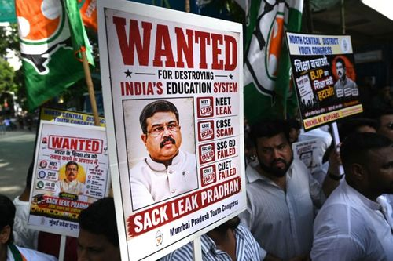
CJP Protest on Education Minister — United for education.
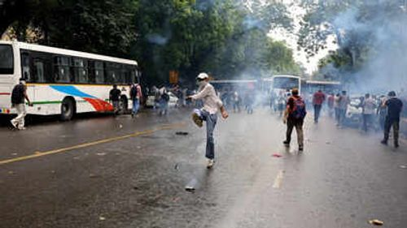
CJP Protest on Education Minister — The fight continues.
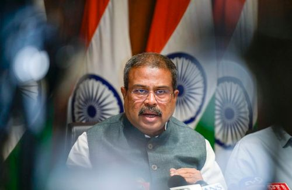
CJP Protest on Education Minister — Solidarity on the streets.
CJP Protest on Education Minister — Voices united.
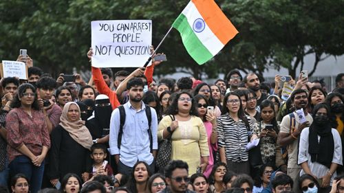
CJP Protest on Education Minister — Moments captured.
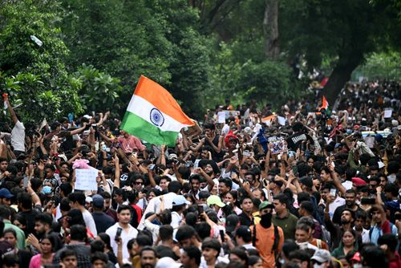
CJP Protest on Education Minister — On the frontlines.
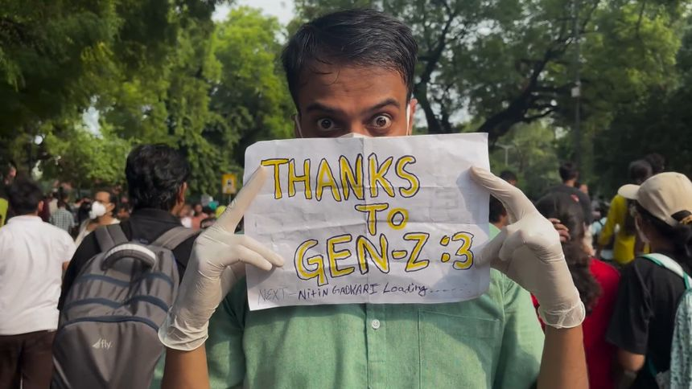
CJP Protest on Education Minister — Crowd power.
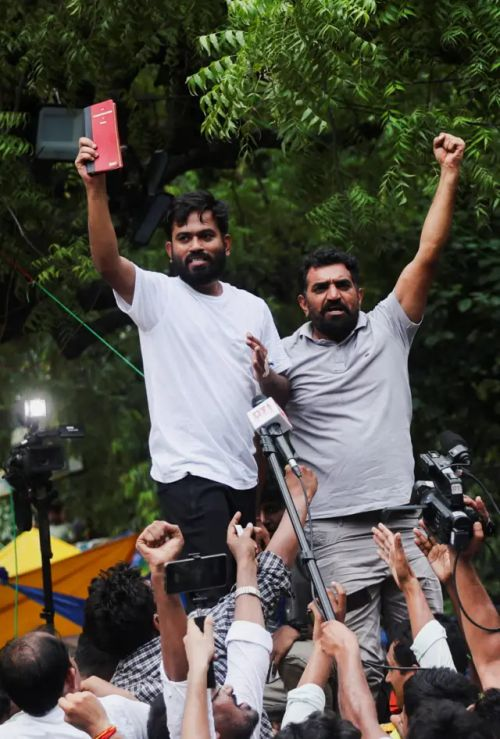
CJP Protest on Education Minister — Remembering the movement.
This is a personal field report compiled from publicly available news sources. The views expressed do not represent any political party, organisation, or government body. This content is shared for informational and archival purposes only. Reader discretion is advised.
Report compiled by Nexus Field Team. All images are for representative purposes.